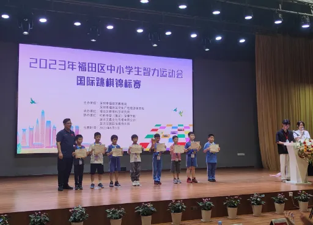
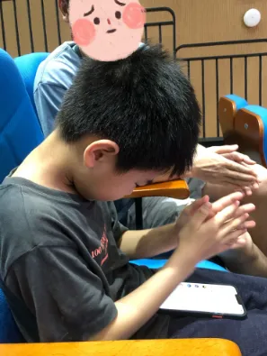
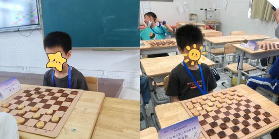

孖仔帮
公众号ID：twinsbang
关注
文|圆圈妈妈
网图|侵删
今天这篇分享一件小事。
圆圈兄弟参加国际跳棋锦标赛。
圆圆险胜，挤进三等奖；
圈圈爆冷，未能获得名次。
此次经历并不只属于我一个人，属于每一个妈妈，属于每一个双胞胎家庭。可能你正在经历，或以后也会遇到。
当你终于遇到时，记得留言跟我分享下这种心情：涩涩的，酸酸的，甜甜的...
上周六，圆圈兄弟参加了一场国际跳棋比赛，这是他们的第一次参赛，同行的还有另外2位小伙伴。
比赛共7轮，圈圈在前面4轮一直表现出色，比分遥遥领先，而圆圆的积分在4人中则一直垫底，没能有太大的突破。
我看着圈圈的表现，胜券在握，觉得他一定能取得好成绩。
然而，令我大跌眼镜的是，在下半场比赛中，圈圈竟然发挥失常，连续犯错，导致比分迅速被对手追上。与此同时，圆圆却一鸣惊人，逐渐崭露头角，在最后一轮对阵中险胜获得2积分后，成功挤进前八强。
一个儿子输了，另一个儿子赢了...
这可怎么办？我太难了。
那种感觉就好像他们小时候都争着抢着要妈妈抱，为难，纠结，无奈，不知所措...此刻面对这种左右两难的情况，更甚！
抱不动了，大不了让圆圈爸抱一下，哄一哄就没事了；可是现在，我简直哭笑不得，无计可施。
我希望圈圈能够取得好成绩，但又为圆圆的突破感到高兴，可我又不能表现得太开心，害怕圈圈对我那似有若无的笑意有什么误会，不得不切换出一副替他惋惜的表情。
我也不知道该如何安慰输掉比赛的圈圈，因为连我自己都无法接受这个事实：认真准备比赛，用心研究战术，上半场一直遥遥领先的圈圈竟然爆冷无缘前八强。
这让我觉得既可惜又心疼。
更糟糕的是，好担心圈圈会与圆圆产生竞争和比较。
比赛结束后，没有获得名次的选手先出来了，圈圈走出赛场，耷拉着脑袋，一脸沮丧地向我走来。
他淡淡地说了句：“妈妈，我输了！”然后就一直抱着我不说话。
我准备了很多安慰他的台词，看来是用不上了。我明白他内心的失落和沮丧，说啥都没用，只能默默地看着他，抱抱他，等待他平复心情。
果然如我所料，在准备颁奖时，他好不容易平复下来的心情，再一次破防了...
因为，他看见了圆圆和另外2个同学都在高高兴兴地排队进场准备领奖，只有他一人在荣誉之外。

他红着眼，很不甘心地问：“妈妈，上次国际象棋输了，这次国际跳棋也输了，为什么会这样？我明明有很认真去练！圆圆都没有练过，为什么他就得奖了？这是为什么啊？”
这一声声的“为什么”，真是直戳我的千年老梗...
我想起了18年前，我两次高考都名落孙山，我非常理解已经很努力了但是一点收获都没有的挫败感。
我拉着他去观众席坐下，轻轻地抚摸着他的头发，试图传递给他一种安慰和理解。
“圈儿，比赛只是生活中的一小部分，输赢并不是最重要的。你和圆圆都很棒，参加比赛本身就是一种成长的经历。不要因为这次失败而失去信心，失去下棋带给你的快乐。”
看着圈圈渐渐释然的表情，我感到一丝宽慰。我知道，我的话语并不能完全消除他内心的失落，但至少我希望他知道，我一直在他身边支持他。
回去的路上，圈圈突然拉住我的手说：“妈妈，虽然我没有获得名次有点可惜，但是我不羡慕谁，下次我还要和圆圆一起去参赛。无论输赢，圆圆和我永远都是最好的兄弟！”

当听到主持人圆圆获得三等奖时，
圈圈低着头，一番挣扎后，
还是忍不住鼓掌了，真心地祝贺他哥，
圆圈爸在一旁，看着他这矛盾的样子...
哭笑不得！
我被他的话感动得几乎要落泪了。他真的成长了，会肯定别人，也会意识到自己的不足，还会越挫越勇。好样的小少年！
“是的圈儿，每个人都会有起起落落的时候，我们要接受胜利和失败，学会从中吸取教训。还有，你和圆圆各有自己的闪光点和特长，不要过度得比较，无论是胜利还是失败，最重要的是兄弟俩一直相互支持、相互鼓励。”
回到家中，我们一起围坐在餐桌前，分享着今天比赛的趣事。
我偷偷瞄了下他们哥俩，看看他们之间的眼神交流，还是像往常那样有说有笑，有打有闹...
我发现，确实是我多虑了，他们并没有对比和竞争的意愿，他们仍然是彼此最好的伙伴，一起分享着快乐和烦恼。
我明白，我所担心的竞争和比较只是我内心的一种投射。孩子们并不在乎名次和奖项，他们更看重的是彼此的陪伴和支持。
那一刻，我意识到，作为妈妈，我也要学会释放自己的焦虑，给予孩子们更多的信任和空间。
我要相信他们有能力面对生活中的起伏和挑战，无论是在跳棋比赛还是在今后的人生旅程中，亦如此！
此次经历并不只属于我一个人，属于每一个妈妈，属于每一个双胞胎家庭。可能你正在经历，或以后也会遇到。
如果你在养育双胞胎的过程中也有类似经历，欢迎你留言分享。

-END-
微信公众号：孖仔帮
ID : twinsbang
专注双胞胎孕育，养育，教育经验分享
扫码关注我们
点一下你会更好看耶

